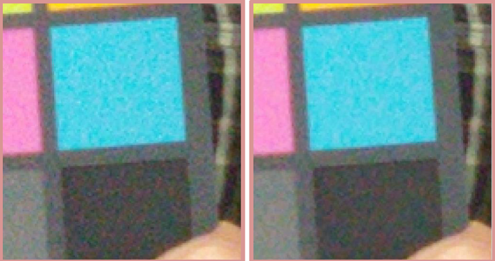

These examples illustrate the effects of adjusting specific GIC
parameter values for a snapshot project.
Effects of the Gic Correction Strength parameter
Figure : (L) Gic Correction Strength = 1.0; (R) Gic Correction Strength = 0.6
Effects of the Thin Line Noise Offset parameter
Figure : (L) Thin Line Noise Offset = 400 (lower setting preserves thin line);
(R) Thin Line Noise Offset = 2000 (higher value results in fuzzier line)
Effects of the Enable Pnr parameter
Figure : (L) PNR disabled; (R) PNR enabled

Effects of the Pnr Correction Strength parameter
Figure : (L) Pnr Correction Strength = 1.0; (R) Pnr Correction Strength = 0.6